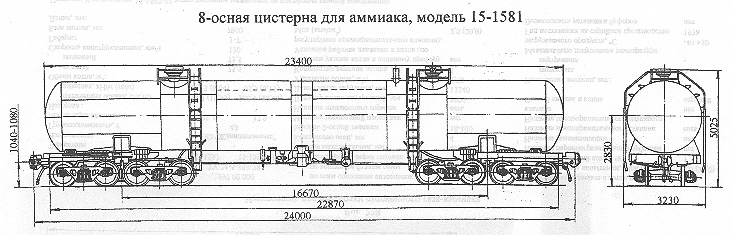

Назначение: для перевозки сжиженного газа - аммиака
Параметры
| Номер проекта | 1581.00.000 |
| Технические условия | ТУ 24.1.14.087-74 |
| Модель вагона | 15-1581 |
| Тип вагона | |
| Изготовитель | ПО "Ждановтяжмаш" |
| Грузоподъемность, т | 92 |
| Масса тары вагона, т | 77 |
| Нагрузка: статическая осевая, кН(тс) |
207,24(21,125) |
| погонная, кН/м(тс/м) | 69,08(7,04) |
| Объем котла, м3 | 161,5 |
| Скорость конструкционная, км/ч | 120 |
| Габарит | 1-Т |
| База вагона, мм | 16670 |
| Длина, мм: по осям сцепления автосцепок |
24000 |
| по концевым балкам рамы | 22870 |
| Высота от уровня верха головок рельсов максимальная, мм | 5025 |
| Количество осей, шт. | 8 |
| Модель 4-осной тележки | 18-101 |
| Наличие переходной площадки | нет |
| То же с ручным тормозом | нет |
| Наличие стояночного тормоза | есть |
| Диаметр котла внутренний,мм | 3000 |
| Длина котла наружная,мм | 23400 |
| Удельный объем, м3/т | 1,76 |
| Количество верхних люков, шт. | 2 |
| Наличие уклона котла к сливному прибору | нет |
| Условное рабочее давление в котле (по регулировке предохранительного клапана), МПа(кгс/см2) | 2,0(20,0) |
| Давление создаваемое в котле при гидровлическом испытании, МПа(кгс/см2) | 3,0(30,0) |
| Количество секций котла, шт. | 1 |
| Наличие парообогревательной рубашки | нет |
| Наличие теплоизоляции | нет |
| Толщина теплоизоляции, мм | нет |
| Наличие теневой защиты | нет |
| Наличие предохранительного клапана | есть |
| Наличие предохранительного впускного клапана | нет |
| Способ налива и слива | верхний передавливанием |
| Количество лестниц, шт.: наружных |
4 |
| внутренних | |
| Максимально допустимая температура загружаемого продукта, ºС | +50 |
| Год постановки на серийное производство | 1973 |
| Возможность установки буфера | нет |
Примечание: в 1978г. изготовлен один опытный образец